USER GUIDE
Getting started with ChameLab
01 / FIRST STEPS
Install and connect
Download ChameLab for your platform from the downloads, or open the web app in Chrome or Edge on a desktop. Plug the Chameleon in over USB. It shows up under Detected devices on its own: select it and press Connect.
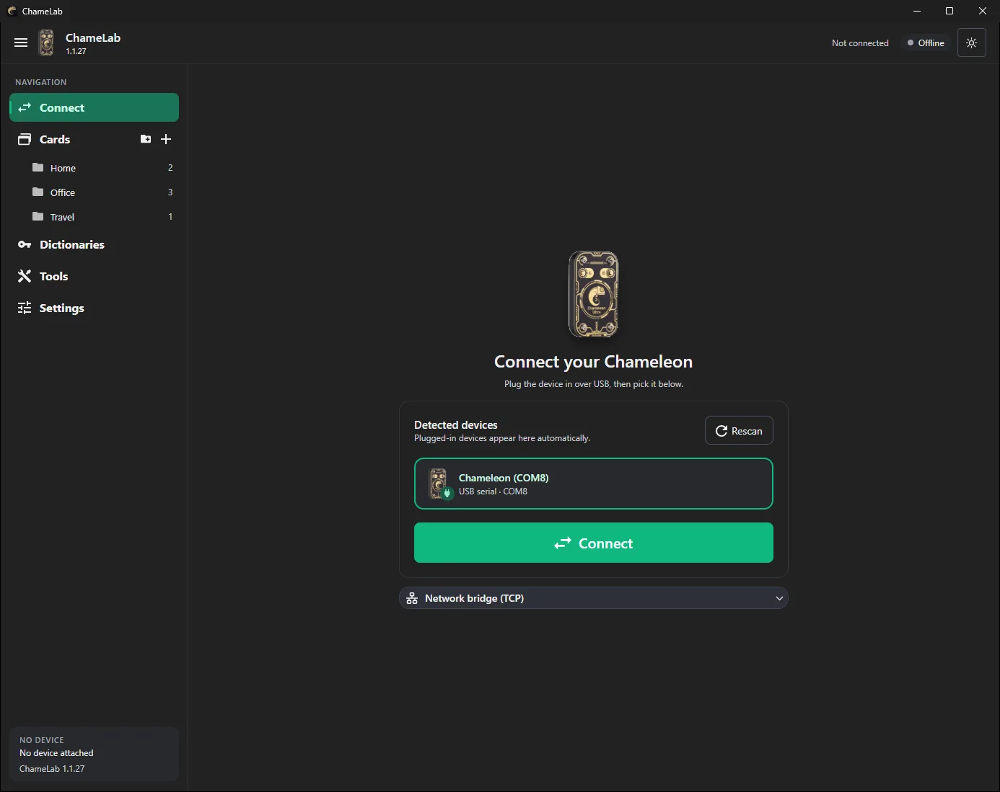
- USB works on Windows, macOS, Linux, Android (with an OTG cable) and in the web app.
- Bluetooth is used on phones and tablets. If pairing with a PIN is enabled on the device, enter the PIN when the phone asks for it.
- Network bridge (TCP) connects to a
host:portbridge or simulator. Expand it under the device list.
You don't need a device for the card library, dictionaries and app settings. They work offline, and so does opening saved sniff captures.
02 / YOUR DEVICE
The Chameleon page
Once you're connected, Connect in the sidebar is replaced by Chameleon. This page shows everything about the device at a glance:
- Battery: charge, voltage and condition.
- Operating mode: Emulator presents the active slot to readers as a card, Reader lets the device read cards placed on it.
- Active slot: tap a number to switch slots, or use the arrows. Filled slots are drawn in their LED color, and the line below shows the HF and LF cards in the active slot.
- Hardware and firmware identity: model, firmware and git version, chip ID and BLE address, each with a copy button.
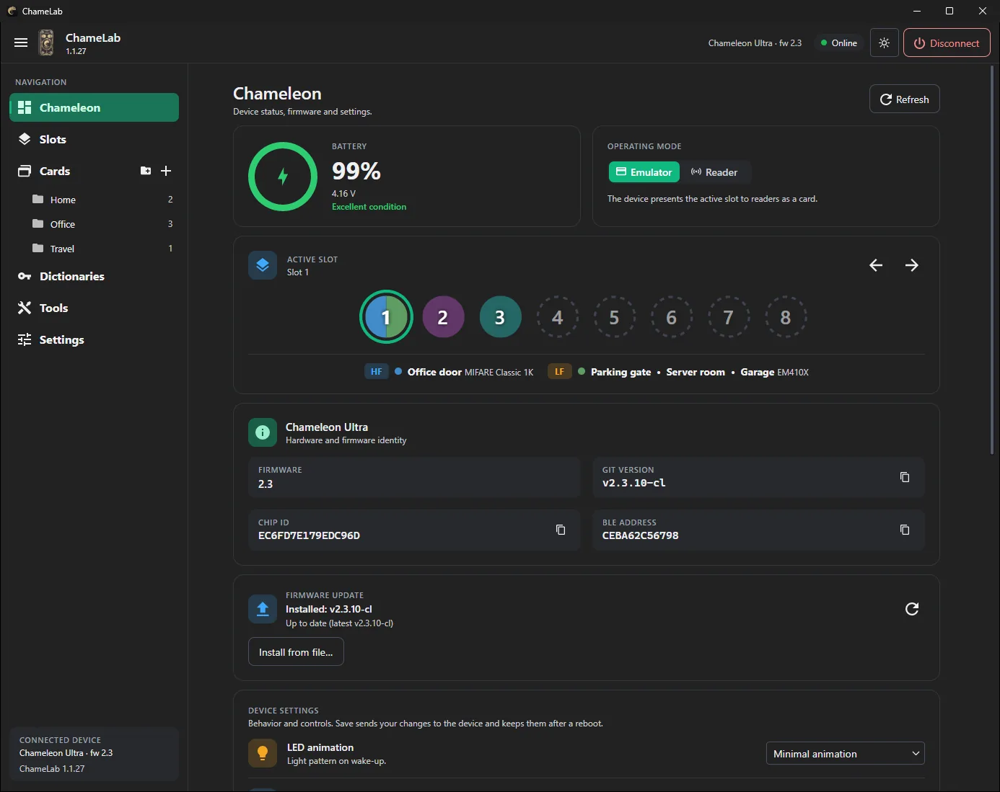
Firmware updates
The Firmware update card checks for the newest ChameLab firmware and installs it over USB or Bluetooth. Your slots, cards and settings are kept. Install from file… flashes a DFU package you downloaded yourself.
Device settings
Scroll down for the settings stored on the device: LED animation, sleep timeout, what buttons A and B do on a short and a long press, the long-press threshold, and Bluetooth pairing with a PIN. Clear bonded devices forgets paired phones; Reset to defaults and Factory reset are at the very bottom.
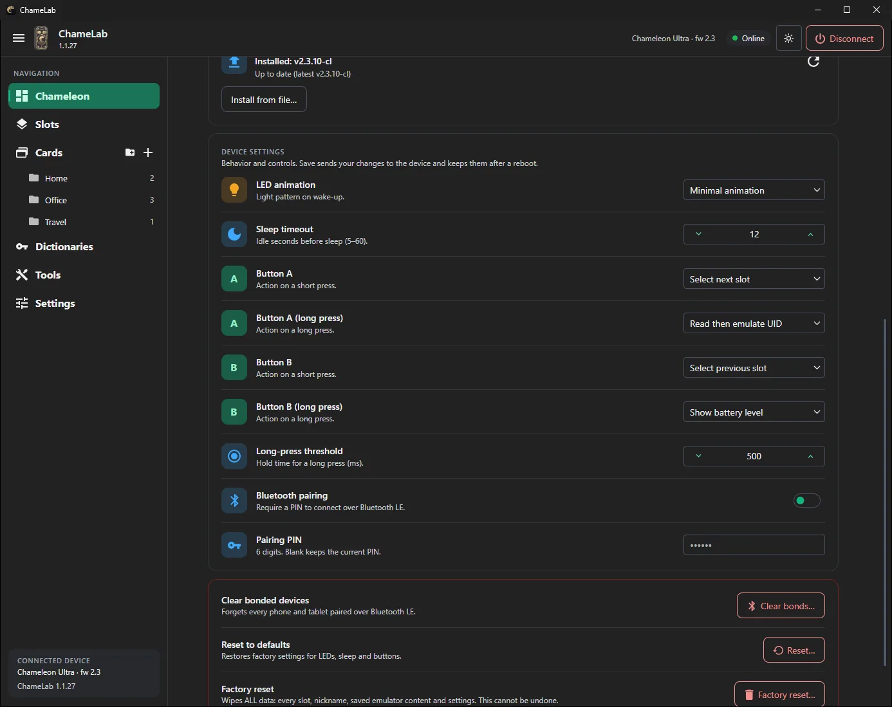
03 / SAVED CARDS
Your card library
Cards is your library of saved cards. Group them into folders (New folder, or the folder icon in the sidebar), search by name, type or UID, and filter by HF or LF. Each card has a color, which also becomes its slot LED color.
Select a card to open it in the editor. From there you can change its details and memory, Duplicate or Export it, Assign to slot to emulate it, or Write it to a blank: LF IDs to T55xx, MIFARE Classic to Gen1a / Gen2 magic cards.
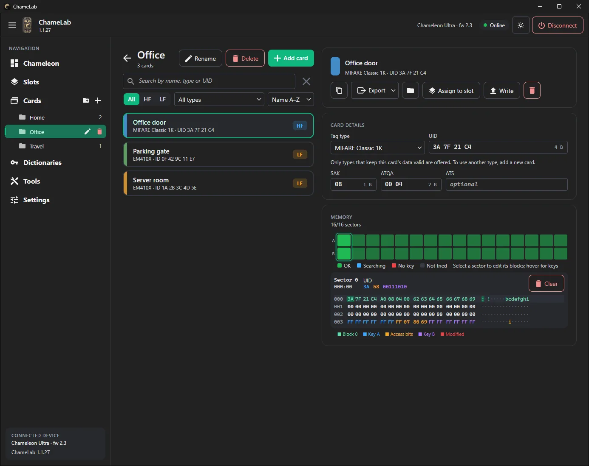
Adding cards
Press + Add card and choose how:
- Scan HF or Scan LF: hold a card on the Chameleon and read it (see Read a card). For LF, pick the protocol below first.
- Import file: ChameleonUltraGUI and Proxmark3 JSON, Flipper
.nfc/.rfid, MCT,.binand.emldumps. - Enter manually: pick a type and type the UID or ID.
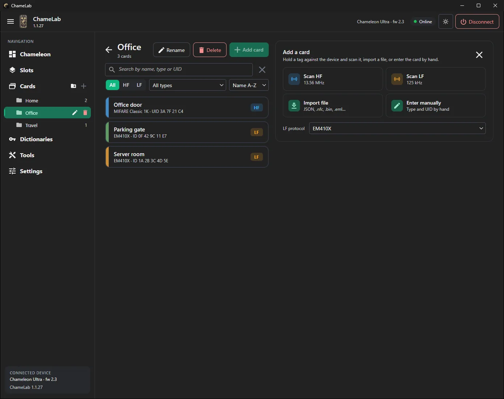
04 / READ AND DUMP
Read a card
- Place the card on the Chameleon and press + Add card → Scan HF. ChameLab shows the type, UID, SAK, ATQA and ATS straight away.
- For a MIFARE Classic card the memory isn't read yet. Press Try keys to try every key from your dictionaries, plus the built-in defaults, on every sector.
- If some sectors stay red (No key), press Check recovery methods. ChameLab tests the card and offers the attacks that work on it.
- When every sector is green, press Save card to keep the full dump in your library.
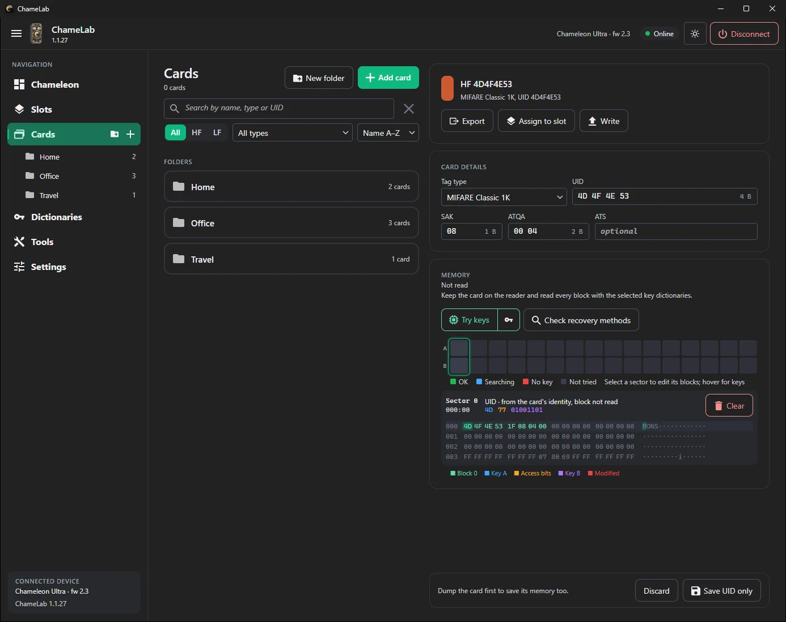
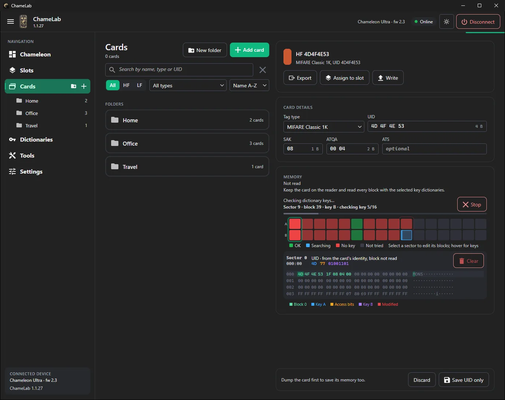
Recovering keys
The memory header shows what ChameLab found out about the card, here PRNG Static (fixed nonces), and the toolbar offers the attacks that fit: darkside, nested, static nested, static encrypted nested or hardnested. To sniff keys from a reader with mfkey32 instead, load the card into a slot first. Recovered keys are saved under the card's UID in Known card keys, so the next read of the same card is instant.
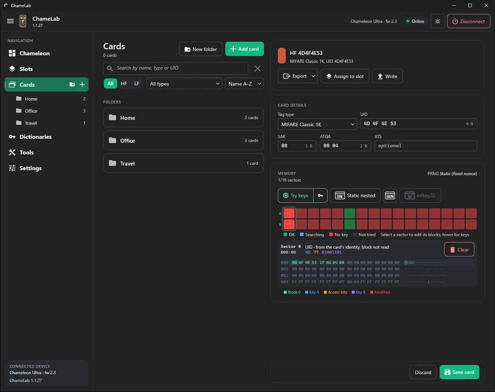
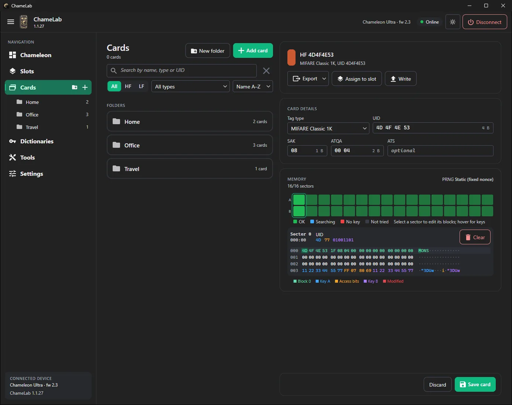
Every long operation, from dictionary checks to attacks, writing magic cards and sniffing, has a Stop button. Stopping keeps the keys and blocks already found, and the device is ready for the next job.
05 / EMULATION
Emulate cards in slots
The Chameleon has eight slots. Each slot holds one HF card and one LF card, and the active slot is what readers see. Slots shows all eight at once. Select a slot to edit it on the right.
- Select a slot and press Choose saved under HF or LF.
- Pick a card from your library. Search works here too.
- Adjust the emulator options if you need to: LED color, Gen1a / Gen2 magic mode, write mode and PRNG type for MIFARE Classic; magic mode and password detection for Ultralight / NTAG.
- Press Save. ChameLab writes the slot to the device and keeps it after a reboot. If you switch slots with unsaved changes, it asks first.
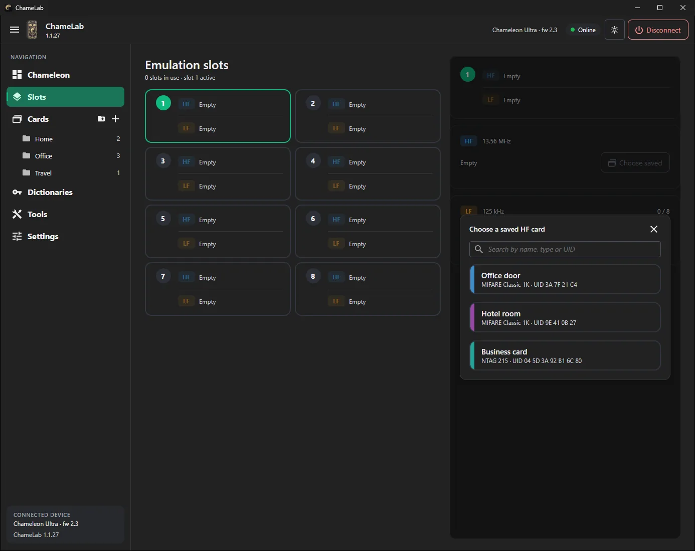
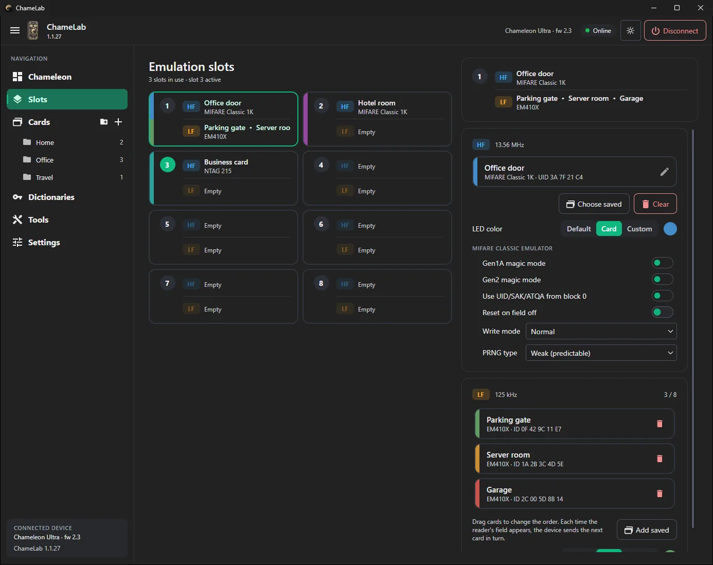
Switch the active slot on the Chameleon page, or with the device buttons. With the default settings, button A goes to the next slot and button B to the previous one.
06 / ONLY IN CHAMELAB
Multi-card LF
One LF slot can hold up to eight LF cards of any emulated type, in any mix: EM410x, Electra, HID Prox, ioProx, Viking, PAC, Jablotron, IDTECK and Pyramid. Each time the reader's field appears, the slot sends the next card in the list. Tap again and again until the right card opens the door.
- Select a slot and add the first card with Choose saved under LF.
- Press Add saved for each additional card. The counter shows how many of the eight places are taken.
- Drag the cards to change the order, then Save.
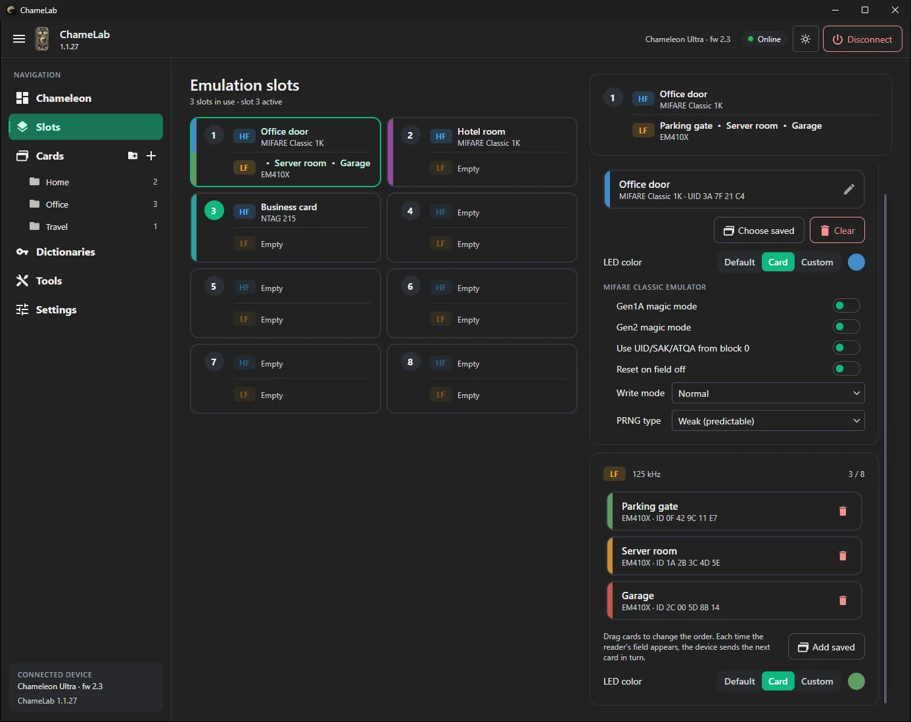
07 / KEYS
Key dictionaries
Dictionaries are lists of MIFARE Classic keys that Try keys uses when reading a card.
Create one with + New dictionary or Import a .dic file. In the
editor, type one key per row: an empty row at the end adds a key, and pasting a list adds
them all at once. Repeated keys and rows you have changed are highlighted.
Known card keys at the top holds every key ChameLab has recovered, sorted by card UID. You don't need to add them anywhere: they are tried automatically on the card they came from.
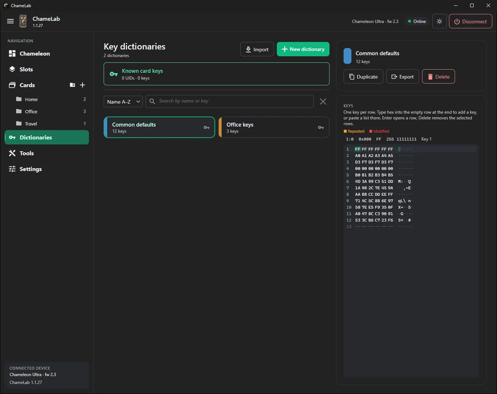
08 / TOOLS
Sniffing
Tools shows what goes over the air between readers and cards.
- Sniff HF: the Chameleon answers a reader as the card in its active slot and
records both sides. Every frame is labelled, and MIFARE Classic keys are recovered from the
reader's authentications on the spot. Choose how long to listen, press Capture and
hold the Chameleon to the reader. Traces load and save as Proxmark3
.tracefiles. - Sniff LF: records 32 ms of the 125 kHz antenna signal with a tag held on the
antenna. You get a zoomable waveform, a level summary, a guess at the modulation and clock,
and a Manchester decode. Captures save as raw
.binand open later without a device.
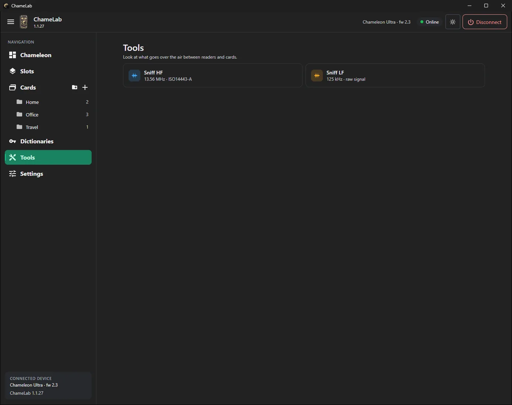
09 / THE APP
App settings and backup
Settings holds the settings of the app itself. They apply right away and work without a device: accent color, scan sounds (a beep when a scan finishes, a buzz when no card is found) and the update check.
Export backup saves all your cards and key dictionaries to one file, and Import backup restores it, for example on another computer or phone.
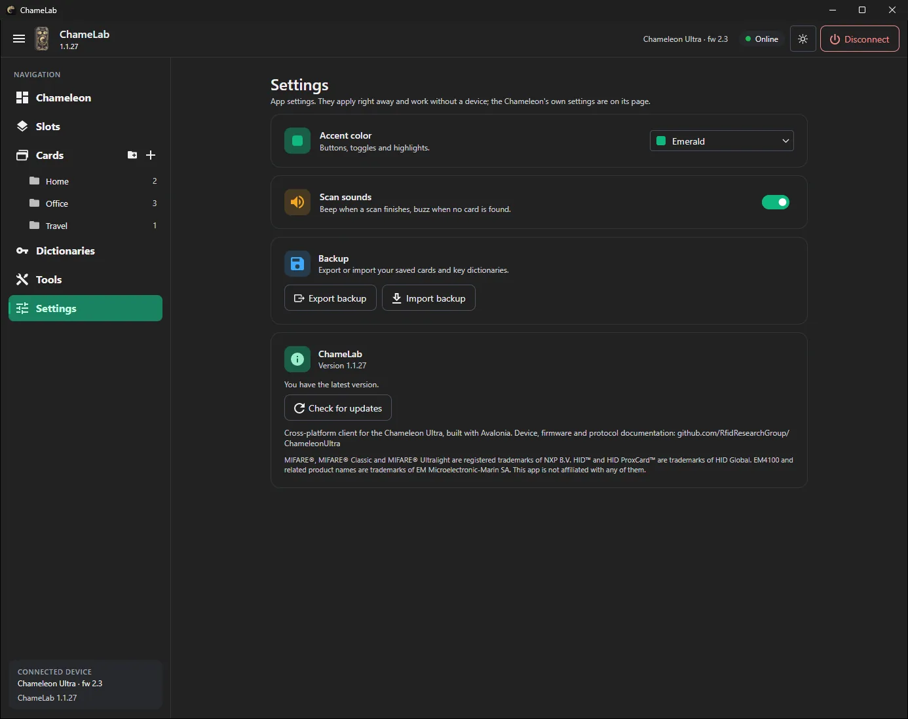